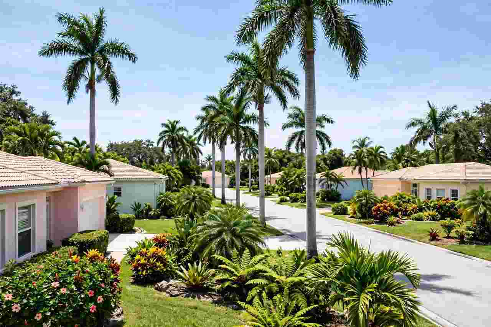

Rodent Control · Maitland, FL
Trusted Rodent Control in Maitland, FL
Rats in the attic or mice in the kitchen in Maitland? Murvo provides same-day rodent control with local crews who inspect first, remove the animals already inside, and seal the entry points they used. Every job is quoted flat-rate in writing before work begins and backed by a written guarantee, covering homes and businesses across Orange County. Service covers 3 ZIP codes across Orange County, including 32799, 32751, 32794, with same-day appointments where schedules allow.
24/7Availability
3ZIP codes covered
Same-dayResponse
Licensed · Upfront options · Written guarantees · Fully insured
Maitland at a glance
Local Rodent Control for Maitland, FL.
Orange County
Countyeastern Florida
RegionOrlando · 11 mi
Nearest metro215 miles southeast of Tallahassee
From Tallahassee3
ZIP codes covered Service by service in Maitland
Rodent Control Services Available in Maitland
The full range of residential and commercial rodent services in Maitland and Orange County - built around the species and housing here, from emergency removal and same-day control to exclusion, proofing, trapping, cleanup, and damage repair. Every service below is quoted flat-rate in writing and backed by our workmanship guarantee.
- 01Rodent Control↗
- 02Rodent Inspection↗
- 03Rodent Removal↗
- 04Rodent Exclusion↗
- 05Rodent Proofing↗
- 06Rat Control↗
- 07Mice Control↗
- 08Mouse Removal↗
- 09Rat Removal↗
- 10Rodent Trapping↗
- 11Rodent Baiting↗
- 12Rodenticide Application↗
- 13Attic Rodent Removal↗
- 14Crawl Space Rodent Removal↗
- 15Wall Rodent Removal↗
- 16Kitchen Rodent Control↗
- 17Garage Rodent Control↗
- 18Commercial Rodent Control↗
- 19Residential Rodent Control↗
- 20Emergency Rodent Removal↗
- 21Same-Day Rodent Control↗
- 22Rodent Damage Repair↗
- 23Rodent Waste Cleanup↗
- 24Rodent Disinfection↗
- 25Rodent Odor Removal↗
- 26Dead Rodent Removal↗
- 27Rodent Dropping Cleanup↗
- 28Rodent Exclusion for Roofs↗
- 29Rodent Exclusion for Vents↗
- 30Rodent Exclusion for Chimneys↗
Rodent Control in Maitland
Rodent Control in Maitland
A single mouse sighting in a Maitland kitchen rarely means a single mouse. Rodents breed fast, contaminate food areas, and gnaw wiring long before the damage is obvious. Murvo responds with same-day appointments where available, a background-checked local crew, and a coordinated program of trapping, exclusion, cleanup guidance, and monitoring that keeps working after the first visit ends.
In Maitland, rodent control is not a generic spray-and-go service. Rodents exploit rooflines, eaves and soffits, attic and gable vents, pool equipment areas, and garage door seals in ranch and stucco homes, waterfront and canal homes, condos, and vacation rentals, and a fix that ignores those routes does not last. Murvo's Maitland team inspects first, shows you the evidence - droppings, gnaw marks, entry gaps - and then lays out the work with a flat-rate written quote. We serve all of Orange County from Maitland, including Eatonville, Fern Park, and every job is covered by our written workmanship guarantee. The Maitland crews who handle rodent control also handle the follow-through - proofing, cleanup, and monitoring - so one visit can close the whole problem.
We start by identifying whether Roof rat (Rattus rattus), Norway rat (Rattus norvegicus), or both are active, because each species nests, feeds, and travels differently. Once numbers fall, exclusion sealing closes the route back in, droppings and nesting debris are removed hygienically, and follow-up monitoring checks the attic, crawl space, and kitchen until readings stay clear. Nothing is sealed while animals remain inside. Traps are placed on proven runways along walls, beams, and pipe runs, checked on schedule, and adjusted as catches change. That order protects your home.
Booking takes one call, and same-day appointments are available in most Maitland areas. Work is carried out in stages, with trap checks and sealing visits booked ahead. At the final visit we walk the finished work together and confirm monitoring is clear. Your technician inspects first, talks you through the plan in plain language, and only starts once you approve the written quote. Questions are answered at every stage, day or night.
In most of Maitland, we can offer a same-day appointment for rodent control, and our lines are open 24/7 for urgent cases like scratching in the walls or a rodent in a living area. Your technician inspects first, explains the plan, and quotes a flat rate in writing before any work begins, so help starts fast without surprises. In Orange County, activity follows the local season, so timing the work matters as much as the method.
Murvo does not quote rodent control sight unseen, because species, activity, and sealing needs change the work involved. After inspection you get one flat-rate written quote, and that is the figure you pay. As national context only, Angi's 2026 figures put rat and mouse removal and control at an average of $396, with a typical range of $189 to $655 — a benchmark, not a Murvo price.
Rodent Inspection in Maitland
Rodent Inspection in Maitland
A proper rodent inspection in Maitland answers three questions: which species is active, where is it nesting, and how is it getting inside? Our licensed, insured technicians document runways, droppings, and damage with photos and plain-language notes, then separate urgent fixes from preventive ones. There is no pressure to proceed, and every recommendation is priced in writing first.
When you need rodent inspection in Maitland, the job starts with what is actually happening in your part of Orange County. Murvo crews work Maitland every week, so they know how Roof rat (Rattus rattus) and Norway rat (Rattus norvegicus) behave around ranch and stucco homes, waterfront and canal homes, condos, and vacation rentals here - and where they get in: rooflines, eaves and soffits, attic and gable vents, pool equipment areas, and garage door seals. We arrive equipped for the full job, confirm the flat rate in writing before work begins, and cover the whole Maitland area, including Eatonville, Fern Park. No call-center runaround and no open-ended hourly billing - just a local crew, a clear plan, and a written quote you approve first. Coverage for rodent inspection spans 3 ZIP codes in Orange County, including 32799, 32751, 32794.
Think of the inspection as three passes. The interior pass covers attic insulation, crawl-space corners, and kitchen voids for droppings, nests, and gnawing. The review pass brings it together: species, likely numbers, contamination, and the order in which fixes should happen. Each pass is photographed, and nothing is recommended without evidence from one of those passes to support it. The exterior pass checks siding, vents, pipe entries, and roof junctions for gaps and rub marks. The report separates what rodents are doing now from what the structure merely allows them to do later.
To book, call any time; urgent inspections are answered 24/7. We agree a window, note where you have noticed signs, and confirm access to the attic and crawl space. On the day, your technician works through the property methodically, reviews photographs with you on site, and leaves written findings plus any quote before departing. You keep the report either way, and it remains useful for staging repairs later or comparing conditions at a future seasonal check.
You do not have to wait days for answers in Maitland. Same-day rodent inspection appointments are available in most areas, urgent calls are taken 24/7, and most home inspections take under an hour. You finish the visit with photos, written findings, and flat-rate pricing for anything we recommend. In Orange County, activity follows the local season, so timing the work matters as much as the method.
Nationally, a professional rodent inspection typically runs $100 to $200 according to Angi's 2026 data, and it is often credited toward the job if you proceed. Murvo confirms your exact rodent inspection price before the visit and quotes any follow-up work as a flat rate in writing after inspection, so the figure you approve is the figure you pay, with no hourly billing.
Rodent Removal in Maitland
Rodent Removal in Maitland
How quickly should you act once droppings appear in living areas? Promptly, because contamination builds daily and young rodents mature fast. Murvo responds with licensed, insured, background-checked technicians who remove animals hygienically, explain when each room is safe again, and back the completed removal with a written workmanship guarantee.
In Maitland, rodent removal is not a generic spray-and-go service. Rodents exploit rooflines, eaves and soffits, attic and gable vents, pool equipment areas, and garage door seals in ranch and stucco homes, waterfront and canal homes, condos, and vacation rentals, and a fix that ignores those routes does not last. Murvo's Maitland team inspects first, shows you the evidence - droppings, gnaw marks, entry gaps - and then lays out the work with a flat-rate written quote. We serve all of Orange County from Maitland, including Eatonville, Fern Park, and every job is covered by our written workmanship guarantee. Seasonal timing matters for rodent removal in Maitland: Rodents are active year-round in Maitland because there is no hard freeze.
Removal starts with an assessment of species, numbers, and access routes across attics, wall voids, garages, and kitchens. Removal is followed immediately by entry-point exclusion, because new rodents will replace removed ones through any gap left open, and disinfection is arranged after heavy activity. Once you approve the written quote, technicians set traps along proven runways, check them on schedule, and remove animals promptly and hygienically. Catch records show progress clearly instead of relying on guesswork. Photos document each stage for you.
Once removal is underway, expect short, predictable visits. When catches reach zero, monitoring confirms it, sealing is discussed, and the job closes with a walkthrough and your guarantee paperwork in hand before we leave. Your technician checks each mapped trap, removes catches hygienically, resets what is still needed, and updates the record with you. At close, prevention advice is tailored to what actually attracted rodents to your property, not copied from a generic checklist.
For active infestations in Maitland, rodent removal can usually start the same day you call, and our team answers 24/7 when a rodent is loose in a living area. The first visit confirms activity and sets traps straight away; return visits then clear and reset them until monitoring shows the property is completely clear. A Maitland inspection confirms it on site - dropping size, gnaw marks, and entry points tell the story quickly.
Cost depends on the species, how many animals are active, and how much sealing the home needs afterwards, so Murvo inspects first and quotes one flat rate in writing. For national context only, Angi's 2026 data averages rat and mouse removal at $396, typically $189 to $655. That benchmark is not a Murvo price; your written quote is the exact figure.
Rodent Exclusion in Maitland
Rodent Exclusion in Maitland
Exclusion is also the safest long-term strategy for Maitland homes, because a sealed house needs far less bait and fewer repeat treatments. Murvo's licensed, insured crews finish roof, vent, and chimney work to weatherproof standards, walk every sealed opening with you afterwards, and back the result with a written workmanship guarantee you can hold us to.
Homeowners in Maitland call Murvo for rodent exclusion because the problem here is specific: Roof rat (Rattus rattus) pressure around ranch and stucco homes, waterfront and canal homes, condos, and vacation rentals, tight access at rooflines, eaves and soffits, attic and gable vents, pool equipment areas, and garage door seals, and activity that follows the local season. Our Orange County crews diagnose the real source before recommending work, explain the options in plain language, and quote one flat rate in writing. Across Maitland - including Eatonville, Fern Park - every visit is backed by licensed, insured technicians and our written workmanship guarantee. The Maitland crews who handle rodent exclusion also handle the follow-through - proofing, cleanup, and monitoring - so one visit can close the whole problem.
The sequence matters as much as the materials. Active openings are closed first, inactive weaknesses next, and purely cosmetic gaps last, so protection arrives where pressure is highest. Photographs record every finished seal with its location, building a reference you keep. Because a properly sealed home needs far less ongoing treatment, exclusion also lowers long-term reliance on bait. A later monitoring check tests the work honestly, revisiting each sealed point for fresh rub marks, droppings, or gnawing. The final monitoring visit therefore matters as much as the sealing day itself, and its findings are shared.
After booking rodent exclusion in Maitland, your technician first surveys the whole exterior and confirms which openings are active. Sealing is then completed opening by opening, photographed as we go, and finished with a walkthrough together. Follow-up monitoring is arranged, and every seal is covered by the written workmanship guarantee. You receive a flat-rate written quote listing each seal before work starts. No opening is sealed without being shown to you first.
Rodent exclusion in Maitland usually starts with a survey visit we can often schedule the same day you call. Sealing itself is booked as soon as any active animals are cleared, because nothing is sealed inside. Most homes are fully sealed within days, not weeks, and urgent entry points near wiring or food areas are prioritized first. A Maitland inspection confirms it on site - dropping size, gnaw marks, and entry points tell the story quickly.
For national context, Angi's 2026 data puts basic exclusion at $200 to $600, depending on access and the number of openings. That is a benchmark, not a Murvo price. After surveying your Maitland home, we list every opening that needs sealing and quote one flat rate in writing, so you pay for the work your property actually needs and nothing more.
Rodent Proofing in Maitland
Rodent Proofing in Maitland
Most Maitland proofing clients have not seen a rodent yet, and that is exactly the point. A rodent proofing survey finds the gaps, screens, and habits that would invite Roof rat (Rattus rattus) and Norway rat (Rattus norvegicus) in later, then fixes them in priority order under one flat-rate written quote you approve first.
When you need rodent proofing in Maitland, the job starts with what is actually happening in your part of Orange County. Murvo crews work Maitland every week, so they know how Roof rat (Rattus rattus) and Norway rat (Rattus norvegicus) behave around ranch and stucco homes, waterfront and canal homes, condos, and vacation rentals here - and where they get in: rooflines, eaves and soffits, attic and gable vents, pool equipment areas, and garage door seals. We arrive equipped for the full job, confirm the flat rate in writing before work begins, and cover the whole Maitland area, including Eatonville, Fern Park. No call-center runaround and no open-ended hourly billing - just a local crew, a clear plan, and a written quote you approve first. The Maitland crews who handle rodent proofing also handle the follow-through - proofing, cleanup, and monitoring - so one visit can close the whole problem.
Materials follow the same standard as full exclusion work: copper mesh packed into irregular gaps, hardware cloth over openings that need airflow, flashing at vulnerable junctions, and sealants matched to smaller cracks. Around kitchens, pipe runs and the voids behind units receive particular attention, because warmth and food meet there. The written plan photographs each weakness, states who handles it, and schedules a seasonal re-check, since new gaps appear as a building ages and proofing works best as maintenance. Seasonal timing is noted in the plan as well.
Arrange a survey at a time that suits you; there is no emergency, so scheduling stays relaxed. You then receive a written quote separating essential work from optional improvements, and nothing proceeds without your say-so. Your technician walks every side of the property with you, photographs weak points, and talks through the plan in plain language. Staging the work is fine; essential sealing can proceed first while optional improvements wait until a season or budget that suits you better.
Rodent proofing is preventive, so there is rarely a rush, but surveys in Maitland can often be arranged the same day you call, and always within a few days. Most proofing work is completed in a single visit once you approve the plan, and booking before colder weather gives your home protection ahead of the seasonal rush indoors. If you are seeing signs now, an inspection this week is the fastest way to know which situation you are in.
For national context, Angi's 2026 data puts exclusion, the core of proofing, at $200 to $600 for basic work. That figure is a benchmark, not a Murvo price. After surveying your Maitland property, we separate quick homeowner wins from specialist sealing and quote the professional work as one flat rate in writing, so you can stage spending sensibly.
Rat Control in Maitland
Rat Control in Maitland
Most Maitland rat calls start with evidence in the attic: droppings too large for mice, greasy rub marks, insulation tunneled overnight. Murvo identifies whether Roof rat (Rattus rattus) or Norway rat (Rattus norvegicus) is responsible, maps nightly routes, and builds control around trapping and exclusion. One flat-rate written quote is approved before work begins.
Homeowners in Maitland call Murvo for rat control because the problem here is specific: Roof rat (Rattus rattus) pressure around ranch and stucco homes, waterfront and canal homes, condos, and vacation rentals, tight access at rooflines, eaves and soffits, attic and gable vents, pool equipment areas, and garage door seals, and activity that follows the local season. Our Orange County crews diagnose the real source before recommending work, explain the options in plain language, and quote one flat rate in writing. Across Maitland - including Eatonville, Fern Park - every visit is backed by licensed, insured technicians and our written workmanship guarantee. Around Altamonte Springs, Winter Park, Casselberry, the pattern is similar: Norway rat (Rattus norvegicus) finds rooflines, eaves and soffits, attic and gable vents, pool equipment areas, and garage door seals first, and lasting rat control has to close those routes.
Wary rats punish rushed trapping, so the program begins with patience. Unset traps are placed on confirmed runways and pre-baited until feeding becomes confident and regular. Only then are traps set, checked frequently, and repositioned as the pattern shifts. Catches are recorded by location, giving a clear picture of colony size and movement. Exclusion follows at rooflines and entry points, and monitoring devices remain in place afterwards to verify that quiet routes have genuinely stayed quiet. Counts matter here, because a falling catch trend tells a different story from a single lucky night.
Call and describe where signs are strongest; that directs the first inspection. Approval starts the program the same visit, with follow-up checks booked ahead so momentum never depends on you calling back. Your technician maps routes and harborage, explains the pre-baiting plan honestly, including why results build over days, and provides the written quote. You will know after each visit what was caught, where placements changed, and what the next check is specifically looking for.
Call day or night — urgent rat control calls in Maitland are answered 24/7, and a same-day inspection can usually start the program. Pre-baiting begins on that first visit once you approve the written quote, traps are set when rats are feeding confidently, and scheduled checks continue until activity stops. A Maitland inspection confirms it on site - dropping size, gnaw marks, and entry points tell the story quickly.
Species, colony size, and the number of entry points to seal all affect rat work, which is why Murvo inspects first and quotes one flat rate in writing. Angi's 2026 figures, given for national context only, average rat control and removal at $396 and typically run $189 to $655; the written quote for your Maitland home is the exact price.
Mice Control in Maitland
Mice Control in Maitland
How many mice does one sighting usually mean? More than one, and the colony grows while treatment waits. Murvo builds mice control around trapping and sealing rather than bait, uses licensed, insured technicians, and confirms the result with follow-up monitoring, so a quiet week is verified instead of simply hoped for.
Homeowners in Maitland call Murvo for mice control because the problem here is specific: Roof rat (Rattus rattus) pressure around ranch and stucco homes, waterfront and canal homes, condos, and vacation rentals, tight access at rooflines, eaves and soffits, attic and gable vents, pool equipment areas, and garage door seals, and activity that follows the local season. Our Orange County crews diagnose the real source before recommending work, explain the options in plain language, and quote one flat rate in writing. Across Maitland - including Eatonville, Fern Park - every visit is backed by licensed, insured technicians and our written workmanship guarantee. The Maitland crews who handle mice control also handle the follow-through - proofing, cleanup, and monitoring - so one visit can close the whole problem.
Our integrated approach favors trapping and sealing over baits, with genuinely pet-safe options for family homes. Droppings in cabinets are never dry-swept; following CDC guidance, surfaces are disinfected first so contamination is not spread into the air, and nesting debris is bagged and removed. Food-storage advice removes the attraction that drew mice in, and sealing is completed as whole-home proofing so kitchens, attics, and voids stay clear after the program ends. Catch records show exactly how numbers fall each visit.
Book mice control in Maitland with one call, and same-day visits are available in many areas. Your technician surveys the kitchen, attic, and voids, explains where mice are traveling, and gives you a flat-rate written quote before setting a single trap. Trap checks are scheduled before we leave, and a follow-up visit confirms activity has stopped before the job is signed off. Everything is explained in plain language for your household.
Mice programs move quickly in Maitland: a mice control survey can often be arranged the same day you call, and traps are set on that first visit once you approve the quote. Because mice investigate new objects fast, catches usually begin quickly, and scheduled check visits follow until a final confirmation shows activity has fully stopped. In Orange County, most cases involve the Roof rat (Rattus rattus) and the Norway rat (Rattus norvegicus), so the inspection focuses on their routes first.
Mouse work is priced by the number of rooms affected and the amount of sealing involved, so Murvo surveys first and quotes one flat rate in writing. For national context only, Angi's 2026 data averages rat and mouse control and removal at $396, typically $189 to $655. That is not a Murvo price; your written quote is exact.
Mouse Removal in Maitland
Mouse Removal in Maitland
You found droppings in a cabinet or heard scratching in the attic of your Maitland home, and you want the mice out, not managed indefinitely. Murvo's mouse removal locates nests and feeding areas room by room, runs a multi-trap program until catches reach zero, and seals access points behind it. One flat-rate written quote is agreed before work begins.
In Maitland, mouse removal is not a generic spray-and-go service. Rodents exploit rooflines, eaves and soffits, attic and gable vents, pool equipment areas, and garage door seals in ranch and stucco homes, waterfront and canal homes, condos, and vacation rentals, and a fix that ignores those routes does not last. Murvo's Maitland team inspects first, shows you the evidence - droppings, gnaw marks, entry gaps - and then lays out the work with a flat-rate written quote. We serve all of Orange County from Maitland, including Eatonville, Fern Park, and every job is covered by our written workmanship guarantee. Around Altamonte Springs, Winter Park, Casselberry, the pattern is similar: Norway rat (Rattus norvegicus) finds rooflines, eaves and soffits, attic and gable vents, pool equipment areas, and garage door seals first, and lasting mouse removal has to close those routes.
The survey comes first, and it is deliberately thorough. Lofts, under-floor voids, cabinets, and the spaces behind kitchen units are checked for nests, droppings, and stored food caches. Traps are then set in multiples at proven points, because a single trap rarely reflects colony size. Returns are scheduled tightly: catches are cleared, traps reset, and numbers tracked until they fall to zero and stay there across a confirming check before sealing begins. Photographs of nesting sites help here, because they reveal how far activity had spread before trapping began.
For urgent mouse problems in Maitland, contact Murvo for a same-day response where available. The final visit confirms the result and your written workmanship guarantee. Your technician surveys the home, explains the multi-trap plan, and confirms a flat-rate written quote before starting. Return visits are scheduled to clear and reset traps, and cleanup and sealing follow once catches reach zero. You are updated after every visit, without ever chasing us.
In Maitland, mouse removal can often begin the same day you call, especially where mice are active in kitchens or living areas. The first visit surveys nesting sites and sets traps immediately after you approve the quote; because mice investigate traps quickly, catches usually start fast, and return visits continue until numbers reach zero. Around Maitland, ranch and stucco homes, waterfront and canal homes, condos, and vacation rentals give rodents the most cover, which is why entry points get checked before traps are set.
Rooms involved and sealing needed determine the cost of removal, so we survey first and agree a flat rate in writing before work begins. As national context only, Angi's 2026 data averages rat and mouse removal at $396, with a typical range of $189 to $655; that benchmark is not a Murvo price, and your written quote covers your exact program.
Rat Removal in Maitland
Rat Removal in Maitland
If a rat is loose in a living area tonight, call; our lines stay open 24/7. Murvo pairs urgent response with a documented plan: hygienic removal across repeat visits, evidence from monitoring at the end, and a final walkthrough, so clearance is demonstrated to you rather than simply announced.
In Maitland, rat removal is not a generic spray-and-go service. Rodents exploit rooflines, eaves and soffits, attic and gable vents, pool equipment areas, and garage door seals in ranch and stucco homes, waterfront and canal homes, condos, and vacation rentals, and a fix that ignores those routes does not last. Murvo's Maitland team inspects first, shows you the evidence - droppings, gnaw marks, entry gaps - and then lays out the work with a flat-rate written quote. We serve all of Orange County from Maitland, including Eatonville, Fern Park, and every job is covered by our written workmanship guarantee. Around Altamonte Springs, Winter Park, Casselberry, the pattern is similar: Norway rat (Rattus norvegicus) finds rooflines, eaves and soffits, attic and gable vents, pool equipment areas, and garage door seals first, and lasting rat removal has to close those routes.
We lead with trapping and exclusion in an integrated, pet-conscious approach, using locked bait stations only where genuinely justified and monitored on schedule. Monitoring devices and a final walkthrough then provide documented evidence that activity has ended, and ongoing proofing keeps drains, vents, and rooflines checked afterwards. After clearance, contaminated insulation areas can be sanitized, and droppings are never dry-swept: following CDC guidance, surfaces are disinfected first before waste is removed. That evidence is always shared with you in writing.
After booking, we confirm access needs for the attic, basement, or outbuildings so no time is wasted. A final monitoring period confirms the home is clear before sign-off. On the first visit, your background-checked technician sets out the plan and begins pre-baiting once you approve the written quote. Follow-up visits run on schedule until catches stop, then sealing and sanitation are completed. Progress is reported to you after every single visit.
Rats in a living area cannot wait for a routine slot. In Maitland, rat removal can usually start the same day you call and our line answers 24/7 for urgent cases. Pre-baiting starts on the first visit after you approve the written quote, traps are set once rats feed confidently — typically within days — and frequent returns run until monitoring confirms the colony is gone. If you are seeing signs now, an inspection this week is the fastest way to know which situation you are in.
Colony size, access, and the sealing needed afterwards drive the price, so Murvo assesses the property first and quotes a flat rate in writing covering the full program. Angi's 2026 data, for national context only, averages rat removal at $396 and typically ranges from $189 to $655; that is a benchmark, not a Murvo price.
Rodent Trapping in Maitland
Rodent Trapping in Maitland
Most Maitland trapping programs succeed or fail on placement, not equipment. Murvo maps runways from droppings and rub marks first, then positions traps perpendicular to walls and along beams and pipes where rodents genuinely travel. You approve one flat-rate written quote covering the program and its check visits.
When you need rodent trapping in Maitland, the job starts with what is actually happening in your part of Orange County. Murvo crews work Maitland every week, so they know how Roof rat (Rattus rattus) and Norway rat (Rattus norvegicus) behave around ranch and stucco homes, waterfront and canal homes, condos, and vacation rentals here - and where they get in: rooflines, eaves and soffits, attic and gable vents, pool equipment areas, and garage door seals. We arrive equipped for the full job, confirm the flat rate in writing before work begins, and cover the whole Maitland area, including Eatonville, Fern Park. No call-center runaround and no open-ended hourly billing - just a local crew, a clear plan, and a written quote you approve first. In Maitland, rodent trapping calls most often involve ranch and stucco homes, waterfront and canal homes, condos, and vacation rentals, where rooflines, eaves and soffits, attic and gable vents, pool equipment areas, and garage door seals decide whether the fix holds.
Trap selection covers snap traps for quick, humane dispatch, multi-catch devices for busy mouse routes, and live-capture options where you prefer release away from the home. As catches fall, we recommend exclusion sealing, plus droppings cleanup for affected areas, moving the program from active trapping to monitoring and final sign-off. Baits and lures are matched to species and location, and all devices are positioned with pet and child safety in mind and explained to your household. Every device location is mapped for you.
Book rodent trapping in Maitland and a technician can often start the same day. Scheduled returns clear and reset traps and share catch records with you. When numbers reach zero, we confirm monitoring is clear and discuss sealing. The first visit inspects, maps activity, and places or pre-baits traps; you approve a flat-rate written quote covering the program including check visits before we proceed. The finished program is guaranteed in writing.
In Maitland, rodent trapping can usually start the same day you call, with traps placed or pre-baiting begun on the first visit after you approve the quote. Mice often investigate within the first night; wary rats need a few days of pre-baiting before traps are set. Scheduled check visits then keep catches moving until numbers reach zero. If you are seeing signs now, an inspection this week is the fastest way to know which situation you are in.
Rather than charging by the trap or by the visit, Murvo inspects first and quotes rodent trapping as one flat rate in writing for the complete program, including its check visits. Price depends on species, activity level, and how many checks are needed, and there is no hourly billing at any stage, so there are no per-visit surprises.
Rodent Baiting in Maitland
Rodent Baiting in Maitland
Baiting done badly is a risk to pets, children, and wildlife, so Murvo never uses loose bait in Maitland homes. Every station is tamper-resistant and locked, positioned along runways away from play areas and food, and paired with trapping and exclusion so bait is never the only step. One flat-rate written quote covers placement and monitoring.
When you need rodent baiting in Maitland, the job starts with what is actually happening in your part of Orange County. Murvo crews work Maitland every week, so they know how Roof rat (Rattus rattus) and Norway rat (Rattus norvegicus) behave around ranch and stucco homes, waterfront and canal homes, condos, and vacation rentals here - and where they get in: rooflines, eaves and soffits, attic and gable vents, pool equipment areas, and garage door seals. We arrive equipped for the full job, confirm the flat rate in writing before work begins, and cover the whole Maitland area, including Eatonville, Fern Park. No call-center runaround and no open-ended hourly billing - just a local crew, a clear plan, and a written quote you approve first. Homes near Altamonte Springs tend to show activity first in Maitland, which is why inspections start with rooflines, eaves and soffits, attic and gable vents, pool equipment areas, and garage door seals.
Baiting follows Inspect, Remove, Exclude, Clean, and Monitor, and it never stands alone. After a full inspection maps activity, background-checked technicians choose station locations along runways, fence lines, and entry points, away from pet play areas and food storage. Every station is tamper-resistant, locked, labeled, and anchored, with placement photographed for your records. We return on schedule to check consumption, record amounts, and adjust positions, and stations are removed when activity ends rather than left indefinitely. Loose bait is never used anywhere.
Booking starts with a conversation about pets, children, and wildlife on your property, because that shapes placement before we arrive. The inspection visit maps activity, agrees each proposed station location with you, and confirms the written quote. Approved stations are installed locked and labeled that visit, with monitoring dates booked before we leave. Nothing about placement, product type, or monitoring frequency is left vague, and you can ask for the record at any point.
Deliberate setup matters more than speed with rodent baiting, but the first step is still fast: an inspection in Maitland can often be arranged the same day you call. Stations are placed only after activity is mapped and you approve the written quote and each location, then monitoring runs on a fixed schedule until consumption stops and activity is confirmed clear. The written quote for your Maitland property will spell out exactly which of these applies before any work starts.
Baiting cost depends on how many locked stations your property needs and how long monitoring runs, so Murvo inspects and maps activity first, then quotes one flat rate in writing covering placement and scheduled checks. There are no per-visit surprises, and because our approach is exclusion-first, the goal is always to reduce and eventually remove stations, not maintain them forever.
Rodenticide Application in Maitland
Rodenticide Application in Maitland
In ranch and stucco homes, waterfront and canal homes, condos, and vacation rentals, product choice is only half the decision; placement and oversight matter just as much near rooflines, eaves and soffits, attic and gable vents, pool equipment areas, and garage door seals routes in Orange County. Licensed Murvo technicians use tamper-resistant locked stations exclusively, map and label every unit, record amounts at each visit, and retrieve accessible carcasses promptly to limit odor and secondary risks.
When you need rodenticide application in Maitland, the job starts with what is actually happening in your part of Orange County. Murvo crews work Maitland every week, so they know how Roof rat (Rattus rattus) and Norway rat (Rattus norvegicus) behave around ranch and stucco homes, waterfront and canal homes, condos, and vacation rentals here - and where they get in: rooflines, eaves and soffits, attic and gable vents, pool equipment areas, and garage door seals. We arrive equipped for the full job, confirm the flat rate in writing before work begins, and cover the whole Maitland area, including Eatonville, Fern Park. No call-center runaround and no open-ended hourly billing - just a local crew, a clear plan, and a written quote you approve first. Around Altamonte Springs, Winter Park, Casselberry, the pattern is similar: Norway rat (Rattus norvegicus) finds rooflines, eaves and soffits, attic and gable vents, pool equipment areas, and garage door seals first, and lasting rodenticide application has to close those routes.
Documentation runs through the whole program. Every product is recorded with its label and safety information, which stays with you. Stations are positioned away from areas children and pets use, checked against Florida restrictions before selection, and removed once monitoring confirms activity has ended. Dead rodents are retrieved promptly where accessible. Meanwhile exclusion work proceeds in parallel, sealing entry points so dependence on chemical control shrinks with each visit rather than becoming permanent. State rules are rechecked whenever a product changes, since permitted options can differ between jurisdictions and seasons.
Booking rodenticide application in Maitland starts with an inspection visit, often available the same day. If you proceed, stations are installed locked and labeled, monitoring visits are scheduled, and treatment continues only while monitoring data supports it, under our written workmanship guarantee. Your licensed technician confirms whether treatment is justified, explains safer alternatives first, and gives you a flat-rate written quote before anything is applied. You can stop the program at any point.
In Maitland, rodenticide application begins with an inspection we can often schedule the same day you call, because no responsible application happens without one. If treatment is justified and you approve the written quote, locked stations are installed on that visit. Monitoring then runs on schedule, and treatment stops as soon as data shows activity has ended. In Orange County, most cases involve the Roof rat (Rattus rattus) and the Norway rat (Rattus norvegicus), so the inspection focuses on their routes first.
Application cost depends on the number of locked stations, the product required under Florida rules, and how long monitoring runs. Murvo inspects first, explains whether trapping or exclusion could avoid chemical control entirely, and then quotes one flat rate in writing before work begins. The quote covers scheduled monitoring visits, so there are no per-visit surprises later.
Attic Rodent Removal in Maitland
Attic Rodent Removal in Maitland
Scratching overhead at night in Maitland usually means Roof rat (Rattus rattus) climbing to the roofline or Norway rat (Rattus norvegicus) slipping through vent gaps into your attic. Murvo's attic rodent removal inspects the attic, roof, and eaves, traps active animals up there, and seals the roofline behind them. Same-day visits are prioritized when chewed wiring is found, because that damage is a genuine fire risk.
When you need attic rodent removal in Maitland, the job starts with what is actually happening in your part of Orange County. Murvo crews work Maitland every week, so they know how Roof rat (Rattus rattus) and Norway rat (Rattus norvegicus) behave around ranch and stucco homes, waterfront and canal homes, condos, and vacation rentals here - and where they get in: rooflines, eaves and soffits, attic and gable vents, pool equipment areas, and garage door seals. We arrive equipped for the full job, confirm the flat rate in writing before work begins, and cover the whole Maitland area, including Eatonville, Fern Park. No call-center runaround and no open-ended hourly billing - just a local crew, a clear plan, and a written quote you approve first. Around Altamonte Springs, Winter Park, Casselberry, the pattern is similar: Norway rat (Rattus norvegicus) finds rooflines, eaves and soffits, attic and gable vents, pool equipment areas, and garage door seals first, and lasting attic rodent removal has to close those routes.
Cleanup in a contaminated attic follows CDC guidance: droppings and nesting material are never dry-swept, because that can spread contamination into the air; surfaces are disinfected first, then waste is removed hygienically by technicians in protective equipment. Our IPM approach favors trapping and exclusion over poison in attics, preventing animals dying in inaccessible voids. We also assess insulation damage and can refer repairs, check adjoining crawl spaces for connected activity, and advise on clearing roof debris. Photographs document conditions before and after work.
Before the visit, clear access to the attic hatch and note when noises are loudest. The job closes with a monitoring check, a walkthrough of photographs, and guarantee paperwork in your hands. On arrival, your background-checked technician explains the plan, starts trapping once the quote is approved, and reports insulation and wiring findings plainly. After sealing, a quiet attic is verified rather than assumed, and the monitoring result is reported to you before the job closes.
In Maitland, attic rodent removal visits are often available the same day, and we prioritize attics where chewed wiring creates a fire risk. Trapping starts on the first visit after you approve the written quote, checks run on schedule, and most attics are cleared and sealed within days, with monitoring left briefly to confirm nothing remains inside. Murvo's Maitland crews explain the finding either way, and the flat-rate quote leaves the decision with you.
Attic costs depend on how many animals are active, how much sealing the roofline needs, and whether contaminated insulation requires cleanup, so Murvo inspects first and quotes one flat rate in writing. That quote covers the removal program described, with cleanup options priced separately in writing before you decide, so there are no surprises once work is underway.
Crawl Space Rodent Removal in Maitland
Crawl Space Rodent Removal in Maitland
Droppings under the house, a torn vapor barrier, and smells drifting up through the floors are classic signs rodents are living beneath your Maitland home. Murvo's crawl space rodent removal inspects the under-home space, traps active animals there, and seals foundation vents and gaps. Because activity below often connects to the attic through wall voids, we trace the full route.
When you need crawl space rodent removal in Maitland, the job starts with what is actually happening in your part of Orange County. Murvo crews work Maitland every week, so they know how Roof rat (Rattus rattus) and Norway rat (Rattus norvegicus) behave around ranch and stucco homes, waterfront and canal homes, condos, and vacation rentals here - and where they get in: rooflines, eaves and soffits, attic and gable vents, pool equipment areas, and garage door seals. We arrive equipped for the full job, confirm the flat rate in writing before work begins, and cover the whole Maitland area, including Eatonville, Fern Park. No call-center runaround and no open-ended hourly billing - just a local crew, a clear plan, and a written quote you approve first. Around Altamonte Springs, Winter Park, Casselberry, the pattern is similar: Norway rat (Rattus norvegicus) finds rooflines, eaves and soffits, attic and gable vents, pool equipment areas, and garage door seals first, and lasting crawl space rodent removal has to close those routes.
The sequence is Inspect, Remove, Exclude, Clean, and Monitor. After clearance, vent exclusion with sturdy mesh and sealing of pier and plumbing gaps close the space, and waste cleanup removes droppings and nesting material. A full under-home inspection with photo documentation establishes species, nesting areas, and damage to vapor barrier and pipe insulation. Targeted trapping then removes active rats and mice below the house, with checks on schedule. Monitoring checks confirm activity has ended before we close the job properly.
Book crawl space rodent removal in Maitland and we will schedule an under-home inspection, often within days and sooner for strong odors or heavy activity. Your technician photographs conditions below, explains the plan, and confirms a flat-rate written quote before trapping starts. Clearance, vent screening, and cleanup then follow in sequence. Monitoring confirms the space is quiet, and photographs of finished sealing accompany your guarantee. No extra vents are billed beyond the agreed scope.
For crawl space rodent removal in Maitland, inspections are usually arranged within a few days — and sooner when odors are drifting into living areas or activity sounds heavy. Trapping begins on the first visit after you approve the written quote, clearance and sealing follow in sequence, and monitoring stays in place until the space below is confirmed quiet. That is also why Murvo pairs removal with exclusion in Maitland - treating the animal without closing rooflines, eaves and soffits, attic and gable vents, pool equipment areas, and garage door seals rarely lasts.
Access, the number of vents and gaps to seal, and whether waste cleanup is required all shape crawl-space pricing, so Murvo inspects first and quotes one flat rate in writing. Cleanup options are priced in writing before you decide whether to include them, and there are no surprise charges for extra vents within the agreed scope.
Wall Rodent Removal in Maitland
Wall Rodent Removal in Maitland
Scratching inside a wall in Maitland is maddening precisely because you cannot see what is causing it. Murvo's wall rodent removal locates activity using listening, thermal clues, and entry tracing, then places trapping at void access points to draw animals out without unnecessary demolition. A flat-rate written quote comes first, and access cuts are only made when truly needed.
In Maitland, wall rodent removal is not a generic spray-and-go service. Rodents exploit rooflines, eaves and soffits, attic and gable vents, pool equipment areas, and garage door seals in ranch and stucco homes, waterfront and canal homes, condos, and vacation rentals, and a fix that ignores those routes does not last. Murvo's Maitland team inspects first, shows you the evidence - droppings, gnaw marks, entry gaps - and then lays out the work with a flat-rate written quote. We serve all of Orange County from Maitland, including Eatonville, Fern Park, and every job is covered by our written workmanship guarantee. Coverage for wall rodent removal spans 3 ZIP codes in Orange County, including 32799, 32751, 32794.
Once the void is clear, the route gets closed and the space made safe. If a rodent has died inside, retrieval is followed by sanitation: contaminated material is never dry-swept, surfaces are disinfected first, and odor treatment discourages new animals from investigating. Monitoring at key access points and repeat quiet-wall checks then confirm silence before any minimal, agreed access cut is made good. Baseboard and pipe gaps linked to kitchen activity are sealed as part of wider proofing. Only then is the job closed, with the monitoring record and any sanitation work documented for you.
Book wall rodent removal in Maitland and we will schedule a locating visit, often the same day for loud or persistent wall noise. Your technician traces the activity, explains exactly where the animal is traveling, and confirms a flat-rate written quote before any access work, so wall work never becomes an open-ended bill. Trapping and any agreed access follow, then sealing, sanitation, and monitoring complete the job. Your written guarantee covers the completed work.
In Maitland, wall rodent removal locating visits are often available the same day you call, especially for persistent scratching keeping you awake. Trapping is set at access points on that first visit once you approve the written quote, and because rodents travel the void nightly, results usually follow within days, confirmed by quiet-wall checks before we sign off. In Orange County, activity follows the local season, so timing the work matters as much as the method.
Wall work pricing depends on how precisely activity can be located and whether a minimal access cut is needed, which is why Murvo locates the activity first and quotes a flat rate in writing. That way wall access work never becomes an open-ended bill, and the quote covers the trapping, sealing, and monitoring described in your plan.
Kitchen Rodent Control in Maitland
Kitchen Rodent Control in Maitland
Droppings in cabinets, gnawed packaging or grease marks along the kickboards mean Roof rat (Rattus rattus) or Norway rat (Rattus norvegicus) are feeding where your family eats. Our kitchen rodent control in Maitland removes rodents safely, seals gaps behind appliances and pipes, and helps keep food preparation areas clean, hygienic and properly protected.
Homeowners in Maitland call Murvo for kitchen rodent control because the problem here is specific: Roof rat (Rattus rattus) pressure around ranch and stucco homes, waterfront and canal homes, condos, and vacation rentals, tight access at rooflines, eaves and soffits, attic and gable vents, pool equipment areas, and garage door seals, and activity that follows the local season. Our Orange County crews diagnose the real source before recommending work, explain the options in plain language, and quote one flat rate in writing. Across Maitland - including Eatonville, Fern Park - every visit is backed by licensed, insured technicians and our written workmanship guarantee. Homes near Altamonte Springs tend to show activity first in Maitland, which is why inspections start with rooflines, eaves and soffits, attic and gable vents, pool equipment areas, and garage door seals.
First we map the kitchen: droppings in drawers, gnaw marks on packaging, rub marks and the gaps rodents use around pipes and appliances. Trapping is discreet and positioned away from counters and food storage. Because kitchen activity usually starts elsewhere, we follow routes into basements, garages and wall voids before treating the symptom alone. Entry gaps are sealed, contaminated surfaces disinfected, and simple food-storage changes agreed with you, such as sealed containers, fixed drips and crumbs cleared behind appliances. Each stage is recorded on your written service report.
Booking takes one call. We return to check traps and monitoring points, adjust placement if needed, and confirm the kitchen is clear. Every stage is covered by our written workmanship guarantee. Your technician arrives as arranged, confirms where rodents are feeding and traveling, and talks you through a clear plan with one written flat-rate price. Traps are set discreetly, entry gaps sealed and food areas cleaned down. Nothing starts until you have approved the written quote.
Our phone lines are open 24/7, and kitchen cases involving droppings near food preparation areas are treated as a priority. In many Maitland cases we can arrange a same-day visit, subject to technician availability. Call, describe what you have found, and we will offer the earliest appointment we can. A Maitland inspection confirms it on site - dropping size, gnaw marks, and entry points tell the story quickly.
Cost depends on how many rodents are active, where they are entering, and how much sealing and cleanup the kitchen needs. Murvo inspects first, then gives one flat-rate written quote covering trapping, sealing and follow-up monitoring, with no hourly billing or add-on surprises. You approve the full price before any work begins, and the quote is backed by our written workmanship guarantee.
Garage Rodent Control in Maitland
Garage Rodent Control in Maitland
Boxes stacked against a wall make perfect cover. While the garage stays undisturbed, rodents chew, nest and breed out of sight in many ranch and stucco homes, waterfront and canal homes, condos, and vacation rentals. Our team in Maitland works through the clutter zones methodically, removes the animals, cleans affected spots, and shows you how raised, sealed storage removes the shelter they depend on.
Homeowners in Maitland call Murvo for garage rodent control because the problem here is specific: Roof rat (Rattus rattus) pressure around ranch and stucco homes, waterfront and canal homes, condos, and vacation rentals, tight access at rooflines, eaves and soffits, attic and gable vents, pool equipment areas, and garage door seals, and activity that follows the local season. Our Orange County crews diagnose the real source before recommending work, explain the options in plain language, and quote one flat rate in writing. Across Maitland - including Eatonville, Fern Park - every visit is backed by licensed, insured technicians and our written workmanship guarantee. Coverage for garage rodent control spans 3 ZIP codes in Orange County, including 32799, 32751, 32794.
The garage process pairs removal with long-term proofing. The aim is a garage that no longer shelters rodents or feeds them into your home. Technicians remove rodents and nests, disinfect contaminated areas where needed, and seal the gaps mice and rats squeeze through, remembering mice need only a very small opening. We check vehicle wiring and stored soft furnishings for gnaw damage, recommend sealed containers instead of cardboard, and set monitoring points to verify the space stays clear. Safety of occupants and pets guides every method chosen.
Once booked, your Murvo technician arrives at the agreed time, walks the garage with you and inspects doors, walls and storage. You receive a flat-rate written quote before work starts. Approved work covers trapping, nest removal and sealing, carried out by a licensed, insured technician. We return for monitoring checks, confirm the garage is clear, and leave storage advice behind. All work is covered by our written workmanship guarantee. We leave the area tidy when the work finishes.
Our phones are answered 24/7, and garages with active nesting, damaged wiring or movement into the house are treated as urgent. Depending on technician schedules, a same-day appointment in Maitland is often possible. Describe the signs when you call and we will offer the earliest visit we can arrange. The written quote for your Maitland property will spell out exactly which of these applies before any work starts.
As a national benchmark, Angi's 2026 data shows rat extermination ranging from $189-$655, with an average of $396; that is context only, not a Murvo price. Garage work varies with size, activity and the proofing doors and walls require. After inspecting, Murvo quotes one flat rate in writing for trapping, nest removal, sealing and monitoring, for your approval before anything starts.
Commercial Rodent Control in Maitland
Commercial Rodent Control in Maitland
Loading doors rarely close perfectly, and bin stores rarely stay clean for long. Those two facts explain much commercial rodent pressure in Orange County. Our commercial rodent control in Maitland tackles docks, waste areas, kitchens and storage together, with scheduled monitoring and written reports that show managers exactly what changed between every single visit.
When you need commercial rodent control in Maitland, the job starts with what is actually happening in your part of Orange County. Murvo crews work Maitland every week, so they know how Roof rat (Rattus rattus) and Norway rat (Rattus norvegicus) behave around ranch and stucco homes, waterfront and canal homes, condos, and vacation rentals here - and where they get in: rooflines, eaves and soffits, attic and gable vents, pool equipment areas, and garage door seals. We arrive equipped for the full job, confirm the flat rate in writing before work begins, and cover the whole Maitland area, including Eatonville, Fern Park. No call-center runaround and no open-ended hourly billing - just a local crew, a clear plan, and a written quote you approve first. Coverage for commercial rodent control spans 3 ZIP codes in Orange County, including 32799, 32751, 32794.
For food premises the rules are strict: exclusion and hygiene first, locked stations only, complete records for every product used, and integrated pest management throughout. Contracts can cover a single site or multiple locations, with consistent reporting formats that make group compliance reviews straightforward for managers, auditors and environmental health officers alike. We assess waste handling, deliveries, storage and building fabric, then combine trapping, monitoring and proofing into one documented program. The same careful standard applies on every single visit.
After you make contact, a surveyor visits at a time that suits trading, inspects the whole site and identifies risks. Approved work begins discreetly, with reports after every visit for your audit file. Monitoring continues on schedule, trends are reviewed with you, and the program adjusts as activity falls. You receive a written proposal with flat-rate pricing for initial work before anything starts. Emergency response is available 24/7 for urgent sightings.
Our commercial lines are open 24/7, and live sightings during trading hours are treated as emergencies and handled discreetly. Response in Maitland depends on technician availability, but we will always offer the earliest visit we can and advise on immediate steps to protect stock, customers and your audit position. If you are seeing signs now, an inspection this week is the fastest way to know which situation you are in.
For wider context, Angi's 2026 figures put rat extermination at $189-$655, averaging $396 nationally, though commercial sites are scoped individually and those figures are not Murvo prices. Site size, sector, activity and the exclusion and monitoring required all shape the cost. Murvo surveys first, then quotes a flat rate in writing for initial work or a clear scheduled-service price for an ongoing program, with reports included for your audit file.
Residential Rodent Control in Maitland
Residential Rodent Control in Maitland
Murvo is a rodent-only specialist, and homes are where that focus counts most. In Maitland we inspect attics, crawl spaces, garages and kitchens as one connected system, then remove, exclude, clean and monitor. You approve a flat-rate written quote before any work begins. It is a complete service, not a quick spray.
Homeowners in Maitland call Murvo for residential rodent control because the problem here is specific: Roof rat (Rattus rattus) pressure around ranch and stucco homes, waterfront and canal homes, condos, and vacation rentals, tight access at rooflines, eaves and soffits, attic and gable vents, pool equipment areas, and garage door seals, and activity that follows the local season. Our Orange County crews diagnose the real source before recommending work, explain the options in plain language, and quote one flat rate in writing. Across Maitland - including Eatonville, Fern Park - every visit is backed by licensed, insured technicians and our written workmanship guarantee. The Maitland crews who handle residential rodent control also handle the follow-through - proofing, cleanup, and monitoring - so one visit can close the whole problem.
Houses tell us where to look. Droppings cluster along runways, gnawing marks the feeding spots, and faint smears trace the walls rodents follow nightly. We read that evidence room by room, from attic to crawl space, before placing a single trap. Removal targets the confirmed routes. Sealing then closes the gaps we found, contaminated nesting is cleared safely, and follow-up visits test whether the house has truly settled. Advice on bins, bird food and storage helps remove the reasons rodents chose this property originally.
After booking, a licensed, background-checked technician arrives at the agreed time and inspects the whole property. We return for monitoring visits, report what we find each time, and close the job only when activity has stopped. The work is backed by our written workmanship guarantee. You receive one flat-rate written quote covering the plan before work starts. Once approved, removal, sealing and cleanup go ahead in the right order. We leave the area tidy when the work finishes.
You can call us 24/7, and homes where rodents are in living areas, kitchens or children's bedrooms are prioritized in scheduling. A same-day visit in Maitland is often possible, subject to technician availability. Share what you have seen or heard and we will offer the earliest appointment available, plus advice for the meantime. In Orange County, most cases involve the Roof rat (Rattus rattus) and the Norway rat (Rattus norvegicus), so the inspection focuses on their routes first.
Nationally, Angi's 2026 figures show rat extermination at $189-$655, averaging $396, but those are not Murvo prices for your home. Species, how established activity is, and the exclusion and cleanup needed determine the actual scope. Murvo inspects first and then gives one flat-rate written quote covering removal, sealing, cleaning and monitoring, with no hourly charges, for your approval before work begins.
Emergency Rodent Removal in Maitland
Emergency Rodent Removal in Maitland
Sudden sightings in ranch and stucco homes, waterfront and canal homes, condos, and vacation rentals deserve a proper response, not just a trap dropped by the door. Our emergency rodent removal in Maitland combines urgent removal with a focused inspection of voids, attics and entry points like rooflines, eaves and soffits, attic and gable vents, pool equipment areas, and garage door seals. Help is available around the clock, and we will offer the earliest visit we can arrange.
Homeowners in Maitland call Murvo for emergency rodent removal because the problem here is specific: Roof rat (Rattus rattus) pressure around ranch and stucco homes, waterfront and canal homes, condos, and vacation rentals, tight access at rooflines, eaves and soffits, attic and gable vents, pool equipment areas, and garage door seals, and activity that follows the local season. Our Orange County crews diagnose the real source before recommending work, explain the options in plain language, and quote one flat rate in writing. Across Maitland - including Eatonville, Fern Park - every visit is backed by licensed, insured technicians and our written workmanship guarantee. The Maitland crews who handle emergency rodent removal also handle the follow-through - proofing, cleanup, and monitoring - so one visit can close the whole problem.
Urgent removal still follows our full process, just faster at the front end. Inspection identifies species and scale, removal tackles the animals present, and exclusion stops replacements arriving. Where a rodent has died or nested indoors, cleanup and disinfection are arranged as part of the same plan. You are told honestly what has been completed, what needs a follow-up visit, and what to watch for, with everything recorded on your written quote and guarantee. The same careful standard applies on every single visit.
Call whenever the problem appears, day or night, and describe where the animal is and who is at home. Removal and securing follow, then cleaning and monitoring. Keep children and pets away from the area until we arrive. The technician assesses the scene, explains the plan, and confirms the price in writing before starting. Later checks confirm nothing else is active, and we review the outcome with you before closing the job as complete.
Our lines are open 24/7, every day, and emergency calls in Maitland are triaged by risk, with live rodents in living areas, food contamination and chewed wiring prioritized. We will offer the earliest visit our technicians can reach and talk you through simple steps to keep everyone safe until we arrive. Around Maitland, ranch and stucco homes, waterfront and canal homes, condos, and vacation rentals give rodents the most cover, which is why entry points get checked before traps are set.
For national context, Angi's 2026 data puts rat extermination at $189-$655, averaging $396, though emergency work is not priced from those figures and they are not Murvo prices. Location, numbers involved and the securing, cleanup or follow-up needed set the scope. On arrival Murvo inspects and quotes one flat rate in writing, with no hourly billing even on urgent jobs, and nothing starts until you approve it.
Same-Day Rodent Control in Maitland
Same-Day Rodent Control in Maitland
Waiting lets a small problem grow litters. If Roof rat (Rattus rattus) or Norway rat (Rattus norvegicus) showed up this morning in your Maitland home or business, acting now limits damage and contamination. We will offer the earliest appointment available, start removal where activity is confirmed, and book the proofing and monitoring that make the result last beyond today.
Homeowners in Maitland call Murvo for same-day rodent control because the problem here is specific: Roof rat (Rattus rattus) pressure around ranch and stucco homes, waterfront and canal homes, condos, and vacation rentals, tight access at rooflines, eaves and soffits, attic and gable vents, pool equipment areas, and garage door seals, and activity that follows the local season. Our Orange County crews diagnose the real source before recommending work, explain the options in plain language, and quote one flat rate in writing. Across Maitland - including Eatonville, Fern Park - every visit is backed by licensed, insured technicians and our written workmanship guarantee. Homes near Altamonte Springs tend to show activity first in Maitland, which is why inspections start with rooflines, eaves and soffits, attic and gable vents, pool equipment areas, and garage door seals.
A same-day visit still follows the full Inspect, Remove, Exclude, Clean and Monitor sequence. You know exactly what has been done today and what happens next, in writing. Inspection identifies species, activity levels and entry points such as rooflines, eaves and soffits, attic and gable vents, pool equipment areas, and garage door seals. Traps are set along real runways the same visit, positioned safely around children and pets. Sealing is planned or completed depending on scope, contaminated areas are disinfected, and monitoring is booked before we leave. Materials are chosen for durability, not the cheapest quick fix.
After you book, keep pets away from affected areas and leave droppings undisturbed for inspection. If activity continues within the guarantee terms, we return and address it, exactly as set out in your written guarantee. Your technician assesses, quotes in writing and starts approved work immediately: traps set, key gaps secured, contaminated areas treated. Follow-up visits check traps, complete exclusion and confirm results. The plan is agreed with you before any work begins.
Calling early in the day gives the best chance of a same-day appointment in Maitland, subject to technician availability, and our lines are open 24/7. If today is fully booked, we will offer the next available visit instead. We will also suggest simple precautions you can take in the meantime. If you are seeing signs now, an inspection this week is the fastest way to know which situation you are in.
Same-day work is priced the same fair way as any Murvo job: inspection first, then one flat-rate written quote based on species, activity levels and the exclusion and cleanup needed. There is no hourly billing and no premium surprise for speed. You approve the full price before treatment begins, and the work is backed by our written workmanship guarantee.
Rodent Damage Repair in Maitland
Rodent Damage Repair in Maitland
Rodents chew wiring, shred insulation, gnaw pipework and stain ceilings, and the damage stays long after the animals leave. Our rodent damage repair in Maitland repairs rodent damage properly, replacing contaminated materials and sealing the entry points so the same destruction does not happen again. Licensed and insured, Murvo backs every job with a written workmanship guarantee.
In Maitland, rodent damage repair is not a generic spray-and-go service. Rodents exploit rooflines, eaves and soffits, attic and gable vents, pool equipment areas, and garage door seals in ranch and stucco homes, waterfront and canal homes, condos, and vacation rentals, and a fix that ignores those routes does not last. Murvo's Maitland team inspects first, shows you the evidence - droppings, gnaw marks, entry gaps - and then lays out the work with a flat-rate written quote. We serve all of Orange County from Maitland, including Eatonville, Fern Park, and every job is covered by our written workmanship guarantee. Homes near Altamonte Springs tend to show activity first in Maitland, which is why inspections start with rooflines, eaves and soffits, attic and gable vents, pool equipment areas, and garage door seals.
Repair work follows the evidence from our inspection and your removal plan. Technicians remove nesting and contaminated debris safely, disinfect affected surfaces, and repair the entry damage rodents caused, from pipe holes to door edges. Where rodents have damaged stored belongings, wiring looms or ducting, we explain options honestly before any cost is agreed. The finished repair is checked against the exclusion work, so repaired areas are also proofed areas, not fresh invitations for the next rodents. The same careful standard applies on every single visit.
When you book, tell us where damage is worst, such as the attic, garage or wiring. The guarantee is provided in writing. Your technician assesses, plans and quotes in writing before beginning. Repairs are sequenced with exclusion so nothing is sealed over while rodents remain active. On completion we review each repaired area with you and note any trade work, such as electrical checks, that we recommend. Your technician explains each visit before leaving the property.
You can reach us by phone 24/7, and urgent safety concerns in Maitland, such as chewed wiring, are prioritized for assessment. Repair itself is scheduled once removal and exclusion are under way, so active rodents do not undo the work. Call, describe the damage you can see, and we will arrange the earliest suitable visit. In Orange County, most cases involve the Roof rat (Rattus rattus) and the Norway rat (Rattus norvegicus), so the inspection focuses on their routes first.
Repair costs depend on how much material is damaged, whether insulation needs replacing, and how many entry points require repair and proofing. Murvo assesses first and quotes one flat rate in writing for the agreed scope, with no hourly billing. You see exactly what is included before approving, and the completed repairs are backed by our written workmanship guarantee.
Rodent Waste Cleanup in Maitland
Rodent Waste Cleanup in Maitland
Attic insulation soaked through with urine is not a job for a household mop. Murvo's rodent waste cleanup in Maitland handles heavy contamination safely, following CDC guidance from start to finish. You receive a flat-rate written quote after assessment, and our technicians work in full PPE while waste is removed, bagged and taken away properly.
Homeowners in Maitland call Murvo for rodent waste cleanup because the problem here is specific: Roof rat (Rattus rattus) pressure around ranch and stucco homes, waterfront and canal homes, condos, and vacation rentals, tight access at rooflines, eaves and soffits, attic and gable vents, pool equipment areas, and garage door seals, and activity that follows the local season. Our Orange County crews diagnose the real source before recommending work, explain the options in plain language, and quote one flat rate in writing. Across Maitland - including Eatonville, Fern Park - every visit is backed by licensed, insured technicians and our written workmanship guarantee. The Maitland crews who handle rodent waste cleanup also handle the follow-through - proofing, cleanup, and monitoring - so one visit can close the whole problem.
Safety comes first, following CDC guidance throughout. The area is ventilated before work starts, and all droppings, urine-soaked insulation and nesting are soaked with disinfectant and left for the full dwell time, never dry-swept or vacuumed, which could aerosolise dangerous particles. Technicians wear gloves, respirators and protective clothing throughout. Soaked waste and contaminated materials are bagged, sealed and removed, then surfaces are disinfected again and treated for lingering bacteria and odor-causing residue. Materials are chosen for durability, not the cheapest quick fix.
When you book, tell us where waste is worst, such as the attic or crawl space. Waste is soaked, removed in full PPE and disposed of sealed, then surfaces are disinfected again. We finish with reoccupation advice and a results check, all covered by the written workmanship guarantee. Your technician plans ventilation and access first, quotes in writing, and starts only with your approval. The plan is agreed with you before any work begins.
Calls are answered 24/7, and heavy contamination in living areas — especially where children or pets are present — is prioritized when we book. The earliest visit we can offer in Maitland depends on technician schedules. In the meantime, keep people and pets out of the area, ventilate if you can do so safely, and never dry-sweep or vacuum droppings. That is also why Murvo pairs removal with exclusion in Maitland - treating the animal without closing rooflines, eaves and soffits, attic and gable vents, pool equipment areas, and garage door seals rarely lasts.
For national context, Angi's 2026 figures put rat extermination typically at $189-$655, averaging $396, though cleanup itself scales with how much contaminated material must be removed. Those are national figures, not Murvo prices. Murvo assesses the volume and location first, then quotes one flat rate in writing, so you approve the full cleanup cost before work begins.
Rodent Disinfection in Maitland
Rodent Disinfection in Maitland
Rodents navigate by scent, returning along trails they marked earlier. Disinfection in Maitland therefore does two jobs at once: it reduces bacteria left in droppings and urine, and it breaks down the scent signals guiding newcomers. Our technicians ventilate first, work in protective gear, and advise clearly when each treated area can be used again.
In Maitland, rodent disinfection is not a generic spray-and-go service. Rodents exploit rooflines, eaves and soffits, attic and gable vents, pool equipment areas, and garage door seals in ranch and stucco homes, waterfront and canal homes, condos, and vacation rentals, and a fix that ignores those routes does not last. Murvo's Maitland team inspects first, shows you the evidence - droppings, gnaw marks, entry gaps - and then lays out the work with a flat-rate written quote. We serve all of Orange County from Maitland, including Eatonville, Fern Park, and every job is covered by our written workmanship guarantee. Around Altamonte Springs, Winter Park, Casselberry, the pattern is similar: Norway rat (Rattus norvegicus) finds rooflines, eaves and soffits, attic and gable vents, pool equipment areas, and garage door seals first, and lasting rodent disinfection has to close those routes.
Treatment begins where contamination concentrates, guided by the inspection map of nesting sites, dropping points and urine trails. Following CDC cleanup principles, areas are ventilated first and any remaining deposits are soaked with disinfectant rather than disturbed dry; nothing is dry-swept or vacuumed, and technicians wear gloves and respiratory protection throughout. Disinfectant is then applied across the affected surfaces and left for its full dwell time. After drying, we check the treated zones and confirm which rooms, attics or storage areas are ready for normal use again.
After booking, your technician confirms which areas were contaminated during inspection and quotes disinfection as a flat rate in writing before starting. Treated areas are ventilated, disinfected with full dwell time, and checked once dry. We advise when rooms, attics or crawl spaces can be reoccupied and by whom. Disinfection is sequenced with your cleanup and exclusion plan, and the work is backed by our written workmanship guarantee. You stay informed at every stage of the work.
Disinfection is usually scheduled straight after removal and cleanup, so contaminated areas are treated promptly. We are available 24/7 by phone, and Maitland appointments depend on technician availability. Call once rodents have been found or removed, and we will arrange the earliest suitable treatment visit and explain any precautions meanwhile. In Orange County, activity follows the local season, so timing the work matters as much as the method.
Disinfection is normally a modest part of a full remediation program, scaled to the number and size of areas treated. For context, Angi's 2026 data puts rat extermination typically at $189-$655, averaging $396 nationally; that is not a Murvo price list. Murvo quotes disinfection as one flat rate in writing, never as a vague add-on, and treatment begins only after you approve the price.
Rodent Odor Removal in Maitland
Rodent Odor Removal in Maitland
Rodent odor soaks into insulation, timber and soft materials, and scent trails keep attracting new rodents. Murvo's rodent odor removal in Maitland combines source removal, disinfection and targeted odor treatment in attics, wall voids and crawl spaces. Every job starts with a flat-rate written quote. It is a complete service, not a quick spray.
When you need rodent odor removal in Maitland, the job starts with what is actually happening in your part of Orange County. Murvo crews work Maitland every week, so they know how Roof rat (Rattus rattus) and Norway rat (Rattus norvegicus) behave around ranch and stucco homes, waterfront and canal homes, condos, and vacation rentals here - and where they get in: rooflines, eaves and soffits, attic and gable vents, pool equipment areas, and garage door seals. We arrive equipped for the full job, confirm the flat rate in writing before work begins, and cover the whole Maitland area, including Eatonville, Fern Park. No call-center runaround and no open-ended hourly billing - just a local crew, a clear plan, and a written quote you approve first. The Maitland crews who handle rodent odor removal also handle the follow-through - proofing, cleanup, and monitoring - so one visit can close the whole problem.
Odor work starts with source detection, because treating air while contamination remains never lasts. Technicians inspect attics, wall voids, crawl spaces and subfloors, using the smell pattern and inspection evidence to locate urine-soaked insulation, nesting or a dead rodent. The source is removed safely, with disinfectant soaking and full PPE where droppings or carcasses are involved, never dry-swept. Affected surfaces are then disinfected and treated with odor-neutralising products that break down residue rather than covering it with fragrance. Materials are chosen for durability, not the cheapest quick fix.
When you call, note where the smell peaks and whether it worsens at certain times of day; that pattern helps narrow the search. Your technician inspects those areas first, explains what the source appears to be, and quotes removal and treatment in writing. Approved work takes the source out safely, disinfects the surfaces and applies neutralizing treatment. We review the area with you afterward and explain how the smell should settle as materials dry over the following days.
Odor work starts with an inspection visit, and we will offer the earliest appointment our Maitland technicians can reach; our calls are answered 24/7. A strong smell from a suspected dead rodent in a wall is prioritized where possible. While you wait, ventilate affected rooms and avoid disturbing any droppings or nesting you find. The written quote for your Maitland property will spell out exactly which of these applies before any work starts.
How much odor work costs depends on the source and the materials it has soaked into. For national context, Angi's 2026 figures put rat extermination typically at $189-$655, averaging $396, but those figures are not Murvo prices. Murvo finds the source first — removing it safely with disinfectant soaking and PPE where needed — then quotes one flat rate in writing covering removal, disinfection and treatment for your approval.
Dead Rodent Removal in Maitland
Dead Rodent Removal in Maitland
By day three, you already know something died in that wall. The smell builds, flies gather at one window, and opening cabinets makes it worse. Murvo's dead rodent removal in Maitland pinpoints the location before any opening is made, removes the carcass safely, and disinfects the spot. A flat-rate written quote is confirmed before removal begins.
Homeowners in Maitland call Murvo for dead rodent removal because the problem here is specific: Roof rat (Rattus rattus) pressure around ranch and stucco homes, waterfront and canal homes, condos, and vacation rentals, tight access at rooflines, eaves and soffits, attic and gable vents, pool equipment areas, and garage door seals, and activity that follows the local season. Our Orange County crews diagnose the real source before recommending work, explain the options in plain language, and quote one flat rate in writing. Across Maitland - including Eatonville, Fern Park - every visit is backed by licensed, insured technicians and our written workmanship guarantee. Coverage for dead rodent removal spans 3 ZIP codes in Orange County, including 32799, 32751, 32794.
Location comes first. The carcass is then removed wearing gloves and protective equipment, bagged and sealed, and the area disinfected thoroughly, because dead rodents and their droppings can carry bacteria. Technicians assess the strength and spread of the odor, check fly activity, and inspect attics, crawl spaces and likely wall voids to pinpoint the carcass as precisely as possible before any opening is made. Where access requires a small opening in a wall, the location is chosen carefully and explained first.
One call to our 24/7 line books the visit, and dead-animal calls are treated as urgent because odor and flies worsen fast. On site, inspection comes before pricing, so the written quote reflects the actual access needed. Removal then proceeds carefully: carcass out, contaminated material sealed away, surfaces disinfected. We talk through ventilation while the area clears and note any signs of live rodents found during the search. If further activity exists, we will outline the options before you commit to anything else.
Dead rodent calls are treated as urgent because odor and fly activity worsen quickly, and our line is open 24/7. In Maitland we will offer the earliest visit our technicians can reach. When you call, tell us where the smell is strongest and when it began, and avoid masking sprays meanwhile, as the natural odor pattern helps us locate the carcass. In Orange County, most cases involve the Roof rat (Rattus rattus) and the Norway rat (Rattus norvegicus), so the inspection focuses on their routes first.
For national context, published guides citing Fixr put dead rodent removal typically at $150-$250 nationally, depending on access; that range is not a Murvo price. Wall voids and difficult locations cost more than open attics. Murvo locates the carcass first, then quotes one flat rate in writing covering removal and disinfection, which you approve before work begins.
Rodent Dropping Cleanup in Maitland
Rodent Dropping Cleanup in Maitland
Small dark pellets along skirting boards, in cabinets or on attic insulation confirm rodents are, or have been, living indoors. Our rodent dropping cleanup in Maitland removes droppings safely the CDC way: ventilate, soak with disinfectant, then remove, never dry-sweeping or vacuuming untreated deposits. That is the standard Murvo works to in Florida.
In Maitland, rodent dropping cleanup is not a generic spray-and-go service. Rodents exploit rooflines, eaves and soffits, attic and gable vents, pool equipment areas, and garage door seals in ranch and stucco homes, waterfront and canal homes, condos, and vacation rentals, and a fix that ignores those routes does not last. Murvo's Maitland team inspects first, shows you the evidence - droppings, gnaw marks, entry gaps - and then lays out the work with a flat-rate written quote. We serve all of Orange County from Maitland, including Eatonville, Fern Park, and every job is covered by our written workmanship guarantee. Around Altamonte Springs, Winter Park, Casselberry, the pattern is similar: Norway rat (Rattus norvegicus) finds rooflines, eaves and soffits, attic and gable vents, pool equipment areas, and garage door seals first, and lasting rodent dropping cleanup has to close those routes.
We also read the droppings as evidence while we clean. Size and shape identify the species, quantity shows how established the infestation is, and positions along skirting, in cabinets or behind appliances map the routes our inspection team uses to plan trapping and sealing. Heavier contamination across whole spaces, such as attics full of nesting and waste, is handled under the same disinfect-first process, scaled up. Cleanup is sequenced with removal, so deposits stop reappearing. Your technician explains each stage as the work progresses.
After booking, keep people and pets away from affected areas and leave deposits undisturbed. The work is backed by our written workmanship guarantee. Your technician assesses the rooms affected and quotes one flat rate in writing before starting. Cleanup follows the safe sequence: ventilation, soaking, removal in PPE, then disinfection. We explain what the droppings told us about species and routes, and link cleanup to your removal plan. We leave the area tidy when the work finishes.
We answer 24/7 and will offer the earliest Maitland appointment our technicians can reach, prioritizing droppings in kitchens and living areas. Meanwhile, keep children and pets away from deposits, ventilate the room if you can do so safely, and do not sweep, brush or vacuum anything dry before we arrive. A Maitland inspection confirms it on site - dropping size, gnaw marks, and entry points tell the story quickly.
For national context, Angi's 2026 data puts rat extermination typically at $189-$655, averaging $396; dropping cleanup is normally a smaller, clearly itemised part of overall work, and those figures are not Murvo prices. Murvo assesses how many rooms are affected and how heavy deposits are, then quotes one flat rate in writing before cleanup begins.
Rodent Exclusion for Roofs in Maitland
Rodent Exclusion for Roofs in Maitland
Most attic infestations start at the roofline: lifted tiles, gaps at the eaves, broken vents and holes where pipes pass through. Our rodent exclusion for roofs in Maitland seals the roof properly with gnaw-resistant materials, so Roof rat (Rattus rattus) and Norway rat (Rattus norvegicus) cannot climb in again. Licensed and insured, Murvo backs every job with a written workmanship guarantee.
When you need rodent exclusion for roofs in Maitland, the job starts with what is actually happening in your part of Orange County. Murvo crews work Maitland every week, so they know how Roof rat (Rattus rattus) and Norway rat (Rattus norvegicus) behave around ranch and stucco homes, waterfront and canal homes, condos, and vacation rentals here - and where they get in: rooflines, eaves and soffits, attic and gable vents, pool equipment areas, and garage door seals. We arrive equipped for the full job, confirm the flat rate in writing before work begins, and cover the whole Maitland area, including Eatonville, Fern Park. No call-center runaround and no open-ended hourly billing - just a local crew, a clear plan, and a written quote you approve first. In Maitland, rodent exclusion for roofs calls most often involve ranch and stucco homes, waterfront and canal homes, condos, and vacation rentals, where rooflines, eaves and soffits, attic and gable vents, pool equipment areas, and garage door seals decide whether the fix holds.
Inspection covers the full roofline: eaves and soffits, ridge and roof tiles, flashing, plumbing vents, cable penetrations and junctions where roof sections meet. Active rodents are removed first, never sealed inside. Proofing then combines copper mesh packed into gaps, galvanised hardware cloth over openings, metal flashing repairs and exterior-grade sealants, chosen per location because foam or filler alone is chewed through quickly. Tree branches overhanging the roof are flagged, since they are highways for climbing roof rats. Nothing is left to guesswork at any stage.
One call sets up safe roof access and the inspection. Approved sealing follows in order, with materials fitted securely and edges finished with sealant. Licensed, insured technicians carry out the work. On site, we explain what we find at each section of roofline and confirm the price in writing before starting. At the end, we walk through photographs of every sealed point together, explain which materials were used where, and arrange monitoring to verify the roof remains secure over the coming weeks.
Roof exclusion starts with a survey visit, and we will offer the earliest appointment our Maitland technicians can reach, with our lines open 24/7. Active attic infestations are prioritized where possible. Meanwhile, note where noises occur, and do not block roof gaps yourself, as rodents could be trapped inside. In Orange County, activity follows the local season, so timing the work matters as much as the method.
For national context, published guides put basic exclusion typically at $200-$600 nationally, with full roofline work varying by access, roof size and damage; that range is not a Murvo price. Murvo surveys the roofline first, then quotes one flat rate in writing for the agreed sealing scope. You approve the price before work begins, backed by our written workmanship guarantee.
Rodent Exclusion for Vents in Maitland
Rodent Exclusion for Vents in Maitland
Check the dryer vent flap on laundry day; if it hangs open or its screen is chewed, rodents have likely noticed too. In Maitland, we inspect all vent types together, because proofing one while another stays weak simply moves the problem. Removal happens first where activity is active, then each vent is secured properly.
When you need rodent exclusion for vents in Maitland, the job starts with what is actually happening in your part of Orange County. Murvo crews work Maitland every week, so they know how Roof rat (Rattus rattus) and Norway rat (Rattus norvegicus) behave around ranch and stucco homes, waterfront and canal homes, condos, and vacation rentals here - and where they get in: rooflines, eaves and soffits, attic and gable vents, pool equipment areas, and garage door seals. We arrive equipped for the full job, confirm the flat rate in writing before work begins, and cover the whole Maitland area, including Eatonville, Fern Park. No call-center runaround and no open-ended hourly billing - just a local crew, a clear plan, and a written quote you approve first. In Maitland, rodent exclusion for vents calls most often involve ranch and stucco homes, waterfront and canal homes, condos, and vacation rentals, where rooflines, eaves and soffits, attic and gable vents, pool equipment areas, and garage door seals decide whether the fix holds.
Method matters more than speed here. A loose staple job lasts weeks; a framed, screwed fitting lasts. Technicians measure each vent, shape hardware cloth to the opening, secure it with proper fixings, then use copper mesh for the gaps sheet mesh cannot reach and sealant to weatherproof the perimeter. Dryer ducting gets checked for lint buildup and damage while the cover is fitted, without restricting exhaust flow. Every other entry point nearby is noted too, so vent proofing connects to the wider exclusion picture for your property.
When you book, mention any vents where you have seen droppings, nesting or chewed screens. Your technician inspects, quotes in writing, and starts only with your approval. Proofing follows in order, with hardware cloth, copper mesh and sealants fitted carefully. We finish with a vent-by-vent review and monitoring advice. Everything installed is covered by our written workmanship guarantee, provided with your quote paperwork. The plan is agreed with you before any work begins.
Vent proofing is booked as a standard inspection visit, and we will offer the earliest appointment available in Maitland, with phone lines open 24/7. If rodents are actively coming through a vent into living areas, tell us when you call and we will prioritize where we can. Please do not tape vents shut meanwhile, as blocked airflow and trapped animals create new problems. In Orange County, most cases involve the Roof rat (Rattus rattus) and the Norway rat (Rattus norvegicus), so the inspection focuses on their routes first.
For national context, published guides put basic exclusion typically at $200-$600 nationally, depending on how many points need sealing; that is not a Murvo price. Vent work varies with vent numbers, sizes and access. Murvo inspects every vent first, then quotes one flat rate in writing for the agreed proofing. You approve the price before fitting begins, under our written guarantee.
Rodent Exclusion for Chimneys in Maitland
Rodent Exclusion for Chimneys in Maitland
Chimneys in Maitland homes, working or not, give Roof rat (Rattus rattus) and Norway rat (Rattus norvegicus) warmth, shelter and a route towards living space. Murvo inspects cap, crown, flue and flashing, removes any animals already inside humanely, and fits a draft-safe cap that keeps rodents out while the fireplace works normally.
When you need rodent exclusion for chimneys in Maitland, the job starts with what is actually happening in your part of Orange County. Murvo crews work Maitland every week, so they know how Roof rat (Rattus rattus) and Norway rat (Rattus norvegicus) behave around ranch and stucco homes, waterfront and canal homes, condos, and vacation rentals here - and where they get in: rooflines, eaves and soffits, attic and gable vents, pool equipment areas, and garage door seals. We arrive equipped for the full job, confirm the flat rate in writing before work begins, and cover the whole Maitland area, including Eatonville, Fern Park. No call-center runaround and no open-ended hourly billing - just a local crew, a clear plan, and a written quote you approve first. Around Altamonte Springs, Winter Park, Casselberry, the pattern is similar: Norway rat (Rattus norvegicus) finds rooflines, eaves and soffits, attic and gable vents, pool equipment areas, and garage door seals first, and lasting rodent exclusion for chimneys has to close those routes.
Inspection covers the cap or its absence, the crown, flue lining, damper area and the flashing where chimney meets roof. We then fit a properly sized chimney cap with mesh sides, in stainless steel or galvanised metal, fixed securely to the flue or crown. Any animals already inside are removed humanely first; nothing is ever capped in alive. Crown cracks are sealed, flashing gaps at the roofline are closed with appropriate materials and sealant, and the draw of a working fireplace is checked so the cap is draft-safe.
Tell us when you book whether the fireplace is used, and where noises or debris have shown up. Your technician surveys from firebox to crown, measures the flue, and quotes cap fitting plus sealing in writing before starting. Occupants are removed humanely first, debris is cleared, then the cap is fitted and flashing gaps sealed using copper mesh, hardware cloth and sealants where each fits best. We check the draw together on working fires and review photographs of the finished stack with you.
Chimney work begins with a survey visit, and we will offer the earliest appointment our Maitland technicians can reach, with lines open 24/7. If an animal is trapped or has fallen into the firebox, tell us when you call and we will prioritize where possible. Keep the damper closed and pets away from the fireplace meanwhile. That is also why Murvo pairs removal with exclusion in Maitland - treating the animal without closing rooflines, eaves and soffits, attic and gable vents, pool equipment areas, and garage door seals rarely lasts.
Chimney pricing varies with flue size, access and the condition of the crown. Published guides put basic exclusion typically at $200-$600 nationally, for context, but that range is not a Murvo price. Murvo surveys first, then quotes one flat rate in writing covering the properly sized meshed cap, its fitting and flashing sealed with metal flashing and sealants where needed, for your approval before work begins.
Transparent Pricing
Rodent Control pricing in Maitland
Pricing for rodent control in Maitland should be settled before work starts, not discovered afterward. Murvo inspects first, then provides a flat-rate quote in writing covering the agreed scope. As a national benchmark, clearly separate from Murvo pricing, Angi reported for 2026 an average rat exterminator cost of $396 and a typical range of $189 to $655 across 9,458 projects. Inspections commonly run $100 to $200 and basic exclusion $200 to $600 nationally. Your Murvo quote reflects your property.
| Service | Typical Range |
|---|---|
| Rodent Control | $189-$655 |
| Rodent Inspection | $100-$200 |
| Rodent Removal | $189-$655 |
| Rodent Exclusion | $200-$600 |
| Rodent Proofing | $200-$600 |
| Rat Control | $189-$655 |
| Mice Control | $189-$655 |
| Mouse Removal | $189-$655 |
| Rat Removal | $189-$655 |
| Rodent Trapping | $189-$655 |
| Rodent Baiting | $189-$655 |
| Rodenticide Application | $189-$655 |
| Attic Rodent Removal | $189-$655 |
| Crawl Space Rodent Removal | $189-$655 |
| Wall Rodent Removal | $189-$655 |
| Kitchen Rodent Control | $189-$655 |
| Garage Rodent Control | $189-$655 |
| Commercial Rodent Control | $189-$655 |
| Residential Rodent Control | $189-$655 |
| Emergency Rodent Removal | $189-$655 |
| Same-Day Rodent Control | $189-$655 |
| Rodent Damage Repair | $189-$655 |
| Rodent Waste Cleanup | $189-$655 |
| Rodent Disinfection | $189-$655 |
| Rodent Odor Removal | $189-$655 |
| Dead Rodent Removal | $150-$250 |
| Rodent Dropping Cleanup | $189-$655 |
| Rodent Exclusion for Roofs | $200-$600 |
| Rodent Exclusion for Vents | $200-$600 |
| Rodent Exclusion for Chimneys | $200-$600 |
In Maitland, several practical factors shape a rodent control quote. Infestation size and duration determine removal effort, while species affects trap selection, placement, and exclusion materials. Properties such as ranch and stucco homes, waterfront and canal homes, condos, and vacation rentals may have many entry points across rooflines, foundations, and utility lines, and difficult attic or crawl space access adds time. Cleanup scope, from light droppings removal to contaminated insulation, also matters. Rodents are active year-round in Maitland because there is no hard freeze, with the busiest period from September through January. The rainy season, from June through September, adds flood displacement on top of normal activity in Orange County. Murvo assesses each factor on inspection and confirms the total in writing first.
Our standard
Why Maitland Residents Trust Us
Local accountability across Orange County.
Code-Compliant
From vent covers to roofline repairs, every fix is installed to code using gnaw-resistant materials, documented on your written quote and guarantee.
Same-Day Service
When rodents are in living spaces, Murvo offers same-day appointments for inspection and removal, so the problem is assessed and contained promptly.
Upfront Pricing
Murvo prices by the job, not by the hour. You approve a single written flat-rate quote first, and that price holds.
Licensed & Insured
Murvo is licensed and insured across Florida, and every technician who enters your home is background-checked and trained in rodent work.
Maitland problem patterns
Common Rodent Control Problems in Maitland
The issues we fix most for Maitland homeowners, and why they happen here.
Roof rats in palms, citrus, and attics
Why it happens Roof rats in Maitland feed on citrus and other fruit, nest in palm crowns, and travel branches and lines straight onto roofs. Most attic infestations in Orange County start with fruit and roofline access, not ground entry.
Our approach Murvo traps in the attic and along travel routes, seals eaves, soffits, and vents, and advises on fruit pickup and palm trimming. Exclusion is guaranteed and priced flat-rate after inspection.
Rainy-season and flood displacement
Why it happens Summer rain and flooding in Orange County fill burrows and low ground, sending rats and mice into homes, garages, and pool houses in Maitland. Waterfront and canal properties usually see it first.
Our approach Murvo inspects after major rain for new entry points and contamination, removes displaced rodents, and seals ground and roof openings. We are available 24/7 when storms drive urgent calls.
Condo, rental, and hospitality rodents
Why it happens Condos, vacation rentals, and food businesses in Maitland give rodents shared walls, trash rooms, and steady food, so activity spreads between units. Guest turnover in Orange County can delay reporting until the problem is established.
Our approach Murvo works with managers on inspection, trapping, and exclusion for shared chases, trash rooms, and rooflines. We document entry points so building-wide fixes, not just unit fixes, get done.
Garage and commercial space activity
Why it happens Garages, storage rooms, and commercial buildings in Maitland often have open gaps, cluttered corners, and easy access from the outside. Rodents follow food, warmth, and shelter - and Altamonte Springs to Winter Park properties see this year-round.
Our approach We provide garage rodent control and commercial rodent control with customized trapping, baiting, and exclusion plans. Every Maitland job is quoted at a flat rate up front and backed by our written guarantee.
Early warning signsHave us take a look →
Signs You Need a Rodent Control Pro in Maitland
01Small dark droppings along baseboards, cabinets, and attic insulation
02Scratching, scurrying, or chewing noises in walls at night
03Gnaw marks on wood, plastic, food storage, and wiring
04Dark grease rub marks along walls, pipes, and entry holes
05Strong musty urine odor in attics, kitchens, or crawl spaces
We know the route
Serving Every Corner of Maitland
We route efficiently across Orange County.
Downtown Maitland
Downtown and central Maitland properties, with inspection, removal, and exclusion routed through the urban core and nearby mixed-use streets.
The Altamonte Springs corridor
Established Maitland neighborhoods, where older homes, mature trees, and shared walls call for careful entry-point sealing and attic checks.
Greater Orange County
Wider Orange County coverage for suburban homes and businesses, including garages, crawl spaces, outbuildings, and properties at the county edge.
MAITLAND
AREA
MMMMMAREA
Primary Maitland response zone
Maitland service coverage
Maitland Neighborhoods & Areas We Serve
From central Maitland to the wider Orange County area, Murvo covers rats and mice in houses, apartments, restaurants, and workplaces. Every visit follows the same standard: inspect first, remove, seal, clean, and monitor until activity stops.
327513279432799
Popular neighborhoods
Check my address →
Eatonville · Fern Park · Fairview Shores · Altamonte Springs · Winter Park · Casselberry · Lockhart · Forest City
Reviews
What Maitland Customers Say
4.9★★★★★customer reviews
★★★★★
“I needed a rodent inspection before buying a home in Maitland, and Murvo Rodent Control fit us in the same day. The technician checked the attic, crawl space, and garage, then gave us a written flat-rate quote with no pressure. Straightforward and detailed - highly recommend.”
SK
Sarah K.Maitland
Review★★★★★
“The technician who handled our mice control in Maitland walked me through every step - where the rodents were coming from, what he was doing, and how to prevent it. Patient and easy to understand. I finally understand what to look for.”
DM
Derek M.Maitland
Review★★★★★
“{After the rodenticide application was finished in our Maitland home, the peace of mind was immediate. The technician explained the safety precautions, scheduled a follow-up, and made sure everything was handled properly. Our home feels ours again.”
RB
Rachel B.Maitland
Review Maitland through the year
Seasonal Rodent Control Tips for Maitland
Rodent pressure in Maitland follows the tropical and subtropical climate calendar. Here is what changes by season in Orange County, and what to do about it.
Spring
Mice and Norway rats in Maitland stay active in garages, pool equipment areas, and canal-side ground floors in spring. Warmer weather does not reduce indoor activity in Florida. In Maitland, the earliest signs usually show around Altamonte Springs and similar ranch and stucco homes, waterfront and canal homes, condos, and vacation rentals.
Tip Check pool equipment and garage corners for droppings in spring; both are common first signs.
Summer
Heat in Maitland pushes rodents toward irrigated landscaping, fruit, and water sources around homes in summer. Tourism and outdoor dining add waste pressure near coastal homes. Homes around Altamonte Springs, Winter Park, Casselberry tend to report activity first in Maitland.
Tip Keep irrigation from pooling against the foundation and secure outdoor trash through the summer peak.
Fall
Fall starts the busiest season in Maitland, from September through January, as roof rat activity in attics rises. Citrus ripening in Orange County gives rats a strong reason to stay close to roofs and palms. Homes around Altamonte Springs, Winter Park, Casselberry tend to report activity first in Maitland.
Tip Book an attic inspection in early fall, at the start of the peak, and harvest or remove ripe fruit promptly.
Winter
Cooler, drier winter nights in Maitland concentrate roof rats around fruit trees and warm attic spaces. Norway rats stay near canals, marinas, and sewer lines. Orange County crews watch rooflines, eaves and soffits, attic and gable vents, pool equipment areas, and garage door seals closely this season, especially near Altamonte Springs.
Tip In winter, focus checks on the roofline and attic first, and on canal-side ground floors second.
Outside Maitland?
Explore nearby service areas.
01Winter Park↗02Lockhart↗03Orlando↗04Azalea Park↗05Clarcona↗06South Apopka↗07Apopka↗08Alafaya↗09Ocoee↗10Sky Lake↗11Gotha↗12Windermere↗13Lake Butler↗14Winter Garden↗
View all Florida cities →
Learn more
Rodent Safety & Prevention Resources for Maitland, FL
Murvo follows integrated pest management and safe-cleanup guidance from federal health and environmental authorities. These resources explain rodent-borne disease prevention, safe droppings cleanup, and the exclusion methods that keep rodents out for good:
FAQs
Maitland Rodent Control FAQs
A real dispatcher is available if your question is not answered here.
Call (888) 842-2618 →Yes. Murvo runs 24/7 emergency rodent control in Maitland, with same-day appointments kept open for urgent problems - a rat in the kitchen, scratching in the walls at night, or a dead rodent odor. Call (888) 842-2618 any time and a real dispatcher will route the nearest Orange County crew. Emergency work is quoted flat-rate in writing before we begin, just like scheduled work.
It depends on species, infestation size, how many entry points need sealing, and whether cleanup is required. For national context, Angi's 2026 data puts a rat exterminator at $396 on average, typically $189 to $655. That is national data, not a Murvo price. Murvo inspects your Maitland property first, then quotes one flat rate in writing before any work begins, so the price you approve is the price you pay. In Orange County, most cases involve the Roof rat (Rattus rattus) and the Norway rat (Rattus norvegicus), so the inspection focuses on their routes first.
Yes. Murvo Rodent Control is licensed and insured in Florida, every technician is background-checked, and every Maitland job is backed by a written workmanship guarantee. Florida requires an FDACS Certified Operator and a business license by pest control category, and nuisance wildlife trapping is regulated separately by the FWC under rule 68A-9.010. If rodents return through an entry point we sealed, we come back under the guarantee terms - that is the difference between a treatment and a fix.
We serve Maitland and communities across Orange County, including Eatonville, Fern Park, Fairview Shores, Altamonte Springs, Winter Park, Casselberry. Crews cover 3 ZIP codes in the Maitland area, and because the teams are local, routing is based on where you actually live - not a statewide dispatch queue. If you are just outside the listed areas, call (888) 842-2618 and we will confirm coverage for your address.
Responsibility varies by state law, local housing codes, and the lease, so there is no single national answer. In many places landlords must provide habitable housing and address structural entry points, while tenants must keep food and waste conditions that do not attract rodents. Check the Florida rules and your lease wording carefully. Murvo can inspect a rental in Maitland, document entry points and conditions, and quote the corrective work in writing for whoever authorizes it. That is also why Murvo pairs removal with exclusion in Maitland - treating the animal without closing rooflines, eaves and soffits, attic and gable vents, pool equipment areas, and garage door seals rarely lasts.
Very fast, which is why a small problem grows quietly. A female house mouse can produce multiple litters a year, each with several pups, and those pups can breed within weeks. In a Maitland home with food and shelter, a pair and their offspring can become dozens within a year. Early inspection matters: Murvo removes the active population, seals entry points, and monitors afterward so a surviving pair does not restart the cycle. In Orange County, activity follows the local season, so timing the work matters as much as the method.
An inspection and initial removal visit usually happen on the first appointment, but clearing an established infestation is a process, not a single moment. Trapping and monitoring continue until activity stops, and exclusion is completed once entry points are confirmed. Timelines in Maitland vary with species, access, and infestation size. Murvo sets expectations in writing at the quote stage and keeps monitoring until checks show the property is clear and sealed. The written quote for your Maitland property will spell out exactly which of these applies before any work starts.
Yes - every Maitland job comes with a written workmanship guarantee. If rodents get back in through an entry point Murvo sealed, we return and re-seal it under the guarantee terms. The guarantee is stated in writing on your quote before work begins, along with the flat rate, so there are no surprises about what is covered or what it costs.

Maitland dispatch is ready
Need Rodent Control in Maitland Today?
Do not let scratching, droppings, or gnawed wiring wait another night in Maitland. Call Murvo at (888) 842-2618 for same-day rodent control, a flat-rate quote in writing, and guaranteed exclusion from local licensed crews.